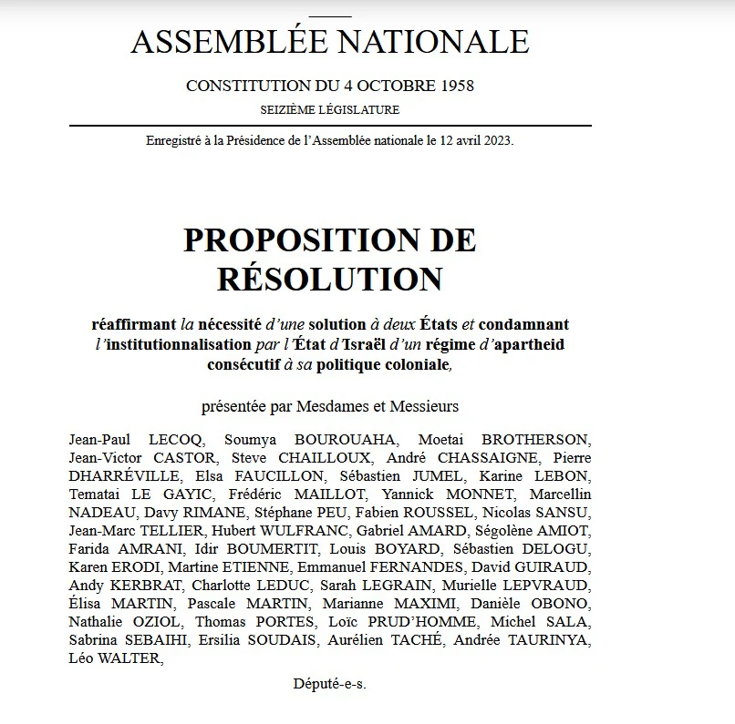

Publication d’archives
Assemblée Nationale - Proposition de résolution n°1082 réaffirmant la nécessité d’une solution à deux États et…
Date indiquée par Facebook · 23 avril 2023
Texte conservé avec la publication
Contexte du dossier
L’AFPS79 annonce pour le 3 avril une rencontre avec Monique Étienne, revenue d’une délégation en Cisjordanie de mars 2022. Son témoignage évoque Naplouse, Hébron, les camps, destructions et extension des colonies ; la date du voyage reste distincte de celle de la soirée. Le 23 avril, la fédération relaie l’interpellation des députés pour la proposition de résolution GDR numéro 1082, sur deux États et la condamnation d’un régime d’apartheid, annoncée à l’examen du 4 mai. Le 20 mai, l’AFPS79 et un appel collectif prévoient de marquer les 75 ans de la Nakba place de la Brèche. Enfin, un lien mis à jour le 4 juillet dénonce un nouveau massacre à Jénine, sans bilan détaillé dans la légende.

Sources
Archive rouge · export Facebook · AR-0002-FB-01678
À lire aussi · Un numéro hors-série de #LHumanité sur la guerre à #Gaza. Les clés pour comprendre. Ce numéro spécial se veut…